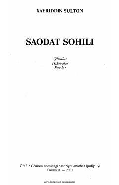

SSHayot va baxt haqidagi qissa, hikoya va esseler to'plami.
Bu kitob Xayriddin Sultonning qissalar, hikoyalar va esselerdan iborat to'plamidir. Asarlarda insoniy munosabatlar, hayot sinovlari va baxt izlash mavzulari o'z aksini topgan. Usta Binoqul va Hofiz Ko'ykiy kabi obrazlar orqali hayotning murakkab qirralari tasvirlanadi.